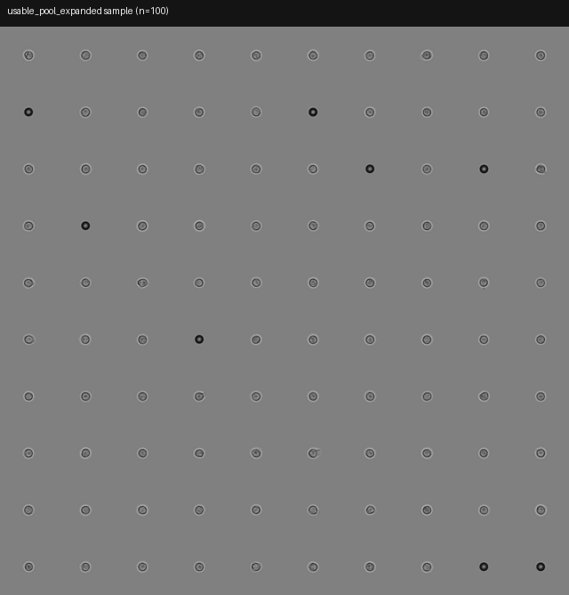
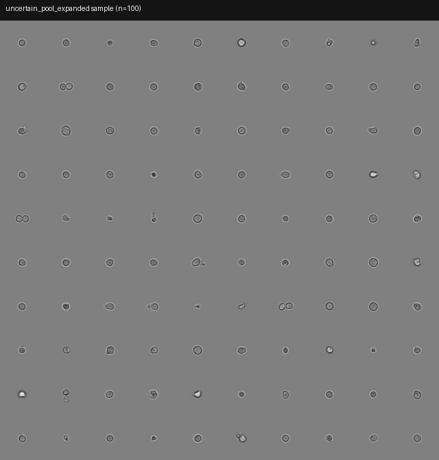
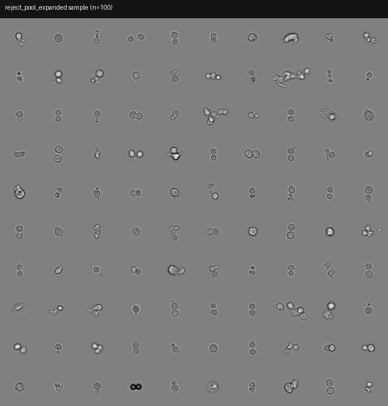

Auto QC 三池浏览（28gusui&pizang）
这是一组来自
28gusui&pizang
的“自动 QC（Auto QC）”结果展示页：模型/规则把全量图像分成
usable_single_cell
/
uncertain
/
reject
三个池。下面每个池都随机抽样
2000
张， 按每页
200
张分页，适合远程快速审查质量与边界案例。
来源
auto_qc_bootstrap_full_expanded
usable 扩池
41957 → 86786
页大小
200 / page
返回站点首页

usable_single_cell
自动 QC 判定为“可用单细胞”的样本。用于确认主体细胞是否清晰、背景/碎片是否被有效排除。
2000
10 页

uncertain
模型/规则无法稳定判定的边界案例。用于排查阈值、覆盖新的失败模式、指导下一轮人工标注。
2000
10 页

reject
自动 QC 判定为“应剔除”的样本（碎片、杂质、模糊、多细胞等）。用于确认拒绝边界是否合理。
2000
10 页
说明：这些页面用于“目测审查”，不是最终结论；每次抽样不一定覆盖所有失败模式。如果你看到“明显误判”的典型样本， 建议回到人工 QC 流程把它加入下一轮标注或 hard-case 采样池。